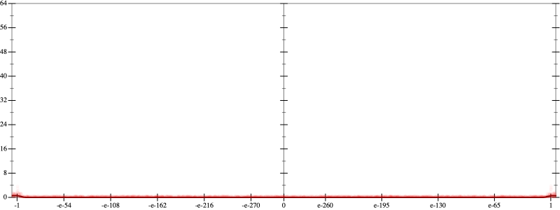
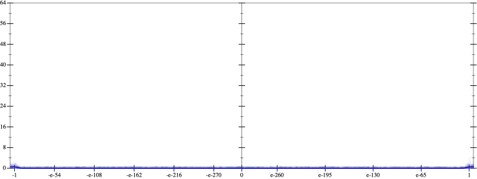
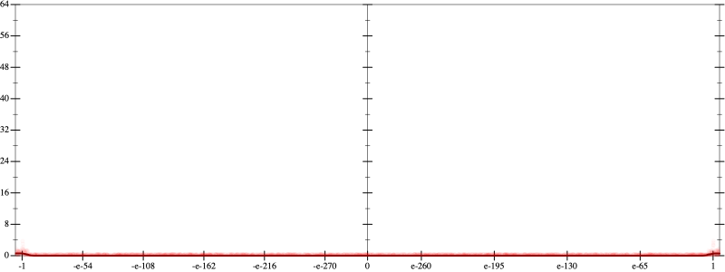
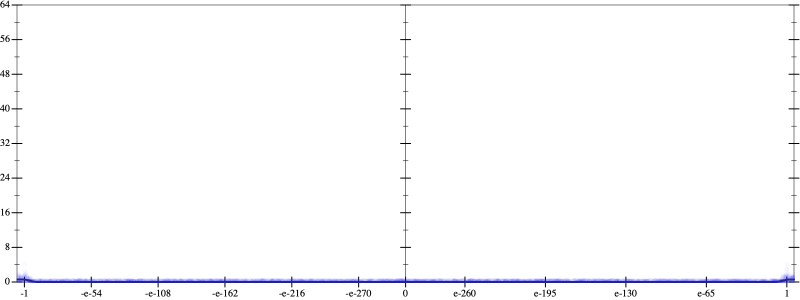
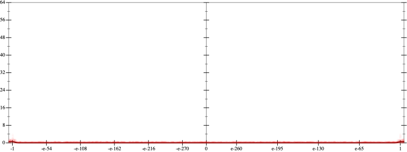
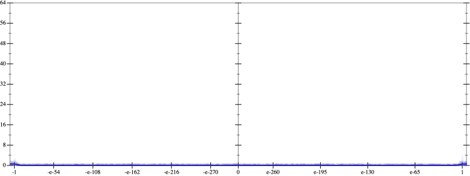

Error
 
Bits error versus x
Bits error versus x
Results
Initial program 0.0
Time bar (total: 57.4s)Debug log
herbie shell --seed 1205461028
(FPCore (x)
:name "6"
:pre (and (>= x -1000000.0) (<= x 1000000.0))
(+ (+ (+ -0.3125 (* 6.5625 (* x x))) (* -19.6875 (* (* (* x x) x) x))) (* 14.4375 (* (* (* (* (* x x) x) x) x) x))))